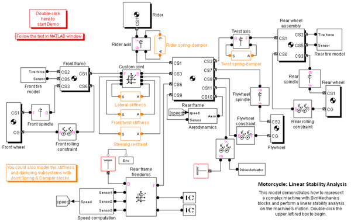

Motorcycle: Linear Stability Analysis
Linearized stability analysis of motorcycle motion (interactive at the command line). Follow the text in MATLAB command window.
This model demonstrates how to represent a complex machine with SimMechanics blocks and perform a linear stability analysis on the machine's motion.
